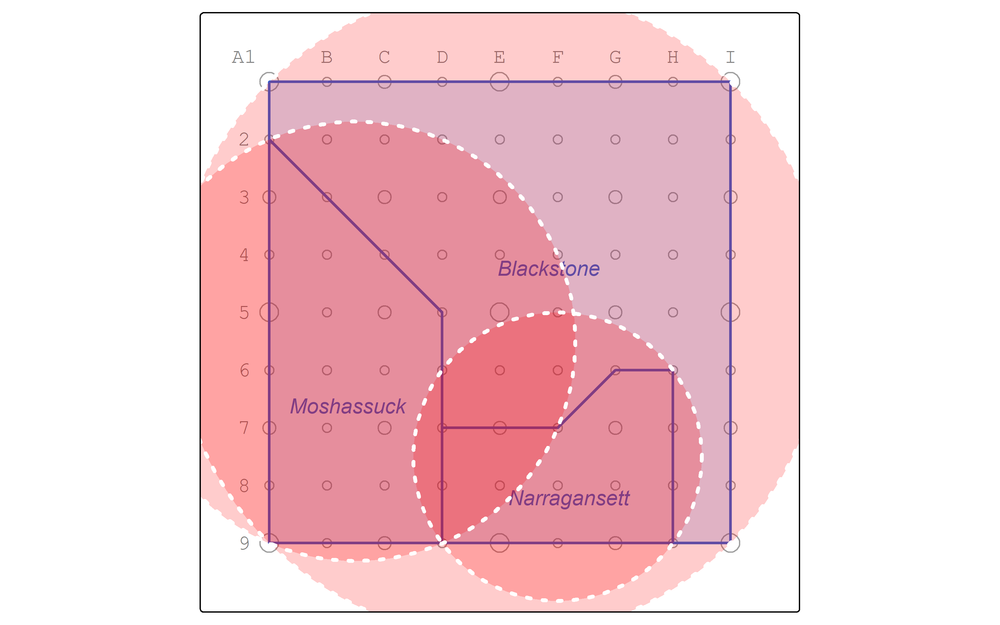

Chapter 2 Area-weighted re-aggregation
Suppose that we need to summarize population data from zones in the boundaries of the watersheds.
We only have one commonality between the two layers: geographic location.
To make matters more complicated, the boundaries are not neatly nested within one another.
In order to move data from the zones into the watersheds, we must assume that the population (and variables thereof) are equally distributed across the space of the zones.
2.2 Disaggregate
Let’s use the st_intersection operation to overlay zones and watersheds.
Resulting in the table…
## zone pop minority poverty s_area name
## 1 NW 5300 4300 2000 875000 [m^2] Moshassuck
## 4 SW 4600 3600 1300 1000000 [m^2] Moshassuck
## 3 SE 4400 3200 1400 1000000 [m^2] Narragansett
## 4.1 SW 4600 3600 1300 1000000 [m^2] Narragansett
## 1.1 NW 5300 4300 2000 875000 [m^2] Blackstone
## 2 NE 4800 3800 1350 1000000 [m^2] Blackstone
## 3.1 SE 4400 3200 1400 1000000 [m^2] Blackstone
## 4.2 SW 4600 3600 1300 1000000 [m^2] Blackstoneand the map…
pointgrid_map +
fragments |> rownames_to_column(var = "id") |>
tm_shape() +
tm_polygons(alpha = 0.5) +
tm_text("id")
Now, calculate area-weighted estimates.
We use an as.numeric function to discard the units data of m^2.
fragments <- mutate(fragments,
f_area = st_area(geom),
aw = as.numeric(f_area / s_area),
aw_pop = aw * pop,
aw_minor = aw * minority,
aw_pov = aw * poverty)
fragments |> st_drop_geometry()## zone pop minority poverty s_area name f_area
## 1 NW 5300 4300 2000 875000 [m^2] Moshassuck 281250 [m^2]
## 4 SW 4600 3600 1300 1000000 [m^2] Moshassuck 750000 [m^2]
## 3 SE 4400 3200 1400 1000000 [m^2] Narragansett 468750 [m^2]
## 4.1 SW 4600 3600 1300 1000000 [m^2] Narragansett 125000 [m^2]
## 1.1 NW 5300 4300 2000 875000 [m^2] Blackstone 593750 [m^2]
## 2 NE 4800 3800 1350 1000000 [m^2] Blackstone 1000000 [m^2]
## 3.1 SE 4400 3200 1400 1000000 [m^2] Blackstone 531250 [m^2]
## 4.2 SW 4600 3600 1300 1000000 [m^2] Blackstone 125000 [m^2]
## aw aw_pop aw_minor aw_pov
## 1 0.3214286 1703.571 1382.143 642.8571
## 4 0.7500000 3450.000 2700.000 975.0000
## 3 0.4687500 2062.500 1500.000 656.2500
## 4.1 0.1250000 575.000 450.000 162.5000
## 1.1 0.6785714 3596.429 2917.857 1357.1429
## 2 1.0000000 4800.000 3800.000 1350.0000
## 3.1 0.5312500 2337.500 1700.000 743.7500
## 4.2 0.1250000 575.000 450.000 162.50002.3 Reaggregate
Now it’s time to re-aggregate into watersheds.
In R, we accomplish this by grouping with group_by and summarizing with summarize.
We dissolve the polygons together with st_union.
watersheds_pop <- fragments |> group_by(name) |>
summarize(
sumpop = sum(aw_pop),
summinor = sum(aw_minor),
sumpov = sum(aw_pov),
geom = st_union(geom)
)Let’s calculate the percentage minority and percentage below poverty and view the resulting attribute table.
watersheds_pop <- mutate(watersheds_pop,
pctminority = round(summinor / sumpop * 100, 1),
pctpov = round(sumpov / sumpop * 100, 1))
watersheds_pop |> st_drop_geometry()## # A tibble: 3 × 6
## name sumpop summinor sumpov pctminority pctpov
## * <chr> <dbl> <dbl> <dbl> <dbl> <dbl>
## 1 Blackstone 11309. 8868. 3613. 78.4 32
## 2 Moshassuck 5154. 4082. 1618. 79.2 31.4
## 3 Narragansett 2638. 1950 819. 73.9 31And map the percentage in poverty in watersheds.
pointgrid_map +
watersheds_pop |>
tm_shape() +
tm_polygons(col = "pctminority",
alpha = 0.5,
legend.show = FALSE) +
tm_text("pctminority") Another approach could have summarized the attribute data without the geometry data, and then joined the summaries back to the watersheds by attribute.
Another approach could have summarized the attribute data without the geometry data, and then joined the summaries back to the watersheds by attribute.
First, drop the geometry data and summarize the attribute data.
watersheds_sum <- fragments |>
st_drop_geometry() |>
group_by(name) |>
summarize(
sumpop = sum(aw_pop),
summinor = sum(aw_minor),
sumpov = sum(aw_pov)
)
watersheds_sum## # A tibble: 3 × 4
## name sumpop summinor sumpov
## <chr> <dbl> <dbl> <dbl>
## 1 Blackstone 11309. 8868. 3613.
## 2 Moshassuck 5154. 4082. 1618.
## 3 Narragansett 2638. 1950 819.Next, join the data to watersheds by attribute.
watersheds_pop <- watersheds |>
left_join(watersheds_sum, by = join_by(name)) |>
mutate(pctminority = round(summinor / sumpop * 100, 1),
pctpov = round(sumpov / sumpop * 100, 1))
watersheds_pop |> st_drop_geometry()## name sumpop summinor sumpov pctminority pctpov
## 1 Moshassuck 5153.571 4082.143 1617.857 79.2 31.4
## 2 Narragansett 2637.500 1950.000 818.750 73.9 31.0
## 3 Blackstone 11308.929 8867.857 3613.393 78.4 32.0And map the percentage in poverty in watersheds.
pointgrid_map +
watersheds_pop |>
tm_shape() +
tm_polygons(col = "pctminority",
alpha = 0.5,
legend.show = FALSE) +
tm_text("pctminority")